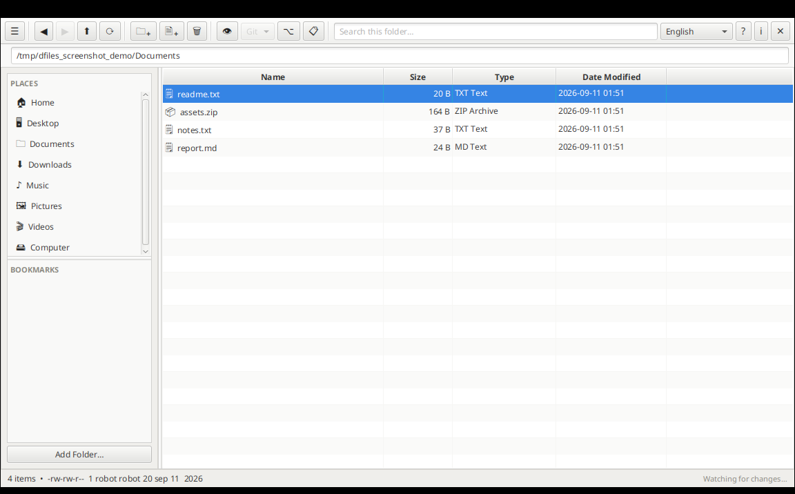

Primeiros passos
O DFiles é um gerenciador de arquivos de dois painéis: uma barra lateral com Locais e Favoritos à esquerda, e o conteúdo da pasta atual à direita. Clique em qualquer local ou favorito, ou dê duplo clique em uma pasta na tabela, para navegar até ela.

Executar o DFiles
O DFiles é distribuído como um único JAR executável, dfiles.jar (compilado com
mvn package). É necessário ter um ambiente de execução Java 21 (JRE ou JDK) instalado na
sua máquina.
Windows
Abra o Prompt de Comando ou o PowerShell na pasta que contém o dfiles.jar e execute:
java -jar dfiles.jar
Se o Java estiver instalado e associado a arquivos .jar, dar duplo clique em
dfiles.jar no Explorador de Arquivos também funciona.
Linux
A partir de um terminal, na pasta que contém o jar:
java -jar dfiles.jar
Unable to open DISPLAY, a variável de ambiente
DISPLAY do seu shell não está apontando para a sua sessão gráfica real — isso é comum em
configurações de área de trabalho remota ou com múltiplas sessões, onde um terminal recém-aberto usa
:0 por padrão, enquanto sua sessão de desktop real é :1 ou superior.
Verifique qual display seu desktop realmente usa e então execute export DISPLAY=:1
(ajustando o número) antes de iniciar o DFiles, ou adicione essa linha ao seu perfil de shell
(~/.bashrc ou ~/.zshrc) para corrigir isso permanentemente.
macOS
A partir do Terminal, na pasta que contém o jar:
java -jar dfiles.jar
Se você ainda não tem o Java 21, a forma mais rápida de instalá-lo é com o Homebrew:
brew install openjdk@21.
Requisitos e ferramentas opcionais
Apenas um ambiente Java 21 é necessário para executar o DFiles. Tudo o mais abaixo é opcional, e só é necessário se você usar o recurso correspondente:
| Ferramenta | Necessária para |
|---|---|
| Java 21 (JRE/JDK) | Executar o DFiles — obrigatório |
| Git | O menu Git da barra de ferramentas (Status, Pull, Push, Confirmar,
Histórico, Inicializar) — o DFiles executa o comando git externamente, então ele
precisa estar instalado e no seu PATH |
OPENAI_API_KEY | O backend OpenAI para scripts assistidos por IA — defina essa variável de ambiente antes de iniciar o DFiles |
| Llamafile | O backend
Local (Llamafile) — execute um servidor Llamafile na sua máquina em
http://localhost:8080 antes de selecionar esse provedor |
VS Code (comando code) | Abrir no VS Code — instale o VS
Code e habilite seu lançador de linha de comando code |
| Docker | Planejado para uma versão futura — nenhum recurso atual o utiliza |
Locais e favoritos
A seção Locais mostra suas pastas padrão (Início, Área de Trabalho, Documentos, Downloads, Música, Imagens, Vídeos e Computador para a raiz do sistema de arquivos). Pastas que ainda não existem são criadas automaticamente para que sempre apareçam.
Clique em Adicionar pasta… para marcar como favorita qualquer pasta que você use com frequência; ela aparecerá em Favoritos. Clique com o botão direito em um favorito para removê-lo, ou em qualquer local ou favorito para ver suas Propriedades.
Arraste o divisor entre Locais e Favoritos para redimensioná-los, e o divisor entre o painel lateral e a tabela de arquivos para redimensionar todo o painel lateral.
Tabela de arquivos
Clique no cabeçalho de uma coluna (Nome, Tamanho, Tipo, Data de modificação) para ordenar por ela — clique novamente para inverter a ordem. Sua escolha de ordenação e se os arquivos ocultos são exibidos são lembradas por pasta.
- O alternador 👁 mostra ou oculta os arquivos ocultos.
- A caixa de busca filtra o conteúdo da pasta atual em tempo real enquanto você digita.
- Selecionar um único arquivo mostra sua string de permissões no estilo Unix na barra de status
(ex.:
-rw-r--r-- 1 usuario grupo 1024 jan 5 2026). - 📋 Copiar lista de arquivos copia a listagem exibida como texto separado por tabulações para a área de transferência.
Ações em arquivos e pastas
Clique com o botão direito em um arquivo ou pasta (ou em um espaço vazio, para ações no nível da pasta) para ver um menu de contexto que inclui:
- Abrir / Abrir com o aplicativo padrão — usa as associações de arquivo do seu sistema
- Recortar, Copiar, Colar, Renomear, Excluir — excluir pede confirmação antes
- Nova pasta / Novo arquivo — também disponíveis como botões na barra de ferramentas
- Copiar caminho — copia o caminho completo para a área de transferência
- Propriedades — caminho, tipo, tamanho (ou número de itens para pastas), data de modificação e permissões
Arquivos compactados
Dar duplo clique em um arquivo zip, tar, tar.gz, tar.bz2, tar.xz, rar ou 7z abre uma listagem do seu conteúdo em vez de tentar executá-lo. A partir daí, ou diretamente pelo menu de contexto:
- Ver conteúdo… — lista todas as entradas do arquivo compactado
- Extrair aqui — extrai diretamente na pasta atual
- Compactar… (em qualquer pasta) — escolha um nome e um formato (zip sempre disponível; os formatos baseados em tar e 7z aparecem automaticamente se a ferramenta de linha de comando correspondente estiver instalada no seu sistema)
Ferramentas de texto
Para arquivos de texto reconhecidos (txt, log, json, csv, xml, código-fonte e similares), o menu de contexto adiciona:
- Ver início/fim… — as primeiras e últimas 100 linhas, útil para revisar um log grande sem carregá-lo por inteiro
- Localizar e substituir… — busca e substituição de texto simples ou expressão
regular com pré-visualização em tempo real. O arquivo original nunca é modificado —
salvar cria um novo
nome_v1.ext,nome_v2.ext, e assim por diante, numerados para nunca sobrescrever uma versão anterior.
Integração com Git
Quando a pasta atual está dentro de um repositório Git, o menu Git da barra de ferramentas é ativado com Status, Atualizar (Pull), Enviar (Push), Confirmar…, Histórico e Inicializar (para criar um novo repositório). A saída de cada comando aparece em um painel na parte inferior da janela.
Terminal e VS Code
- Abrir terminal (barra de ferramentas) ou Abrir terminal aqui (menu de contexto) — abre uma janela de terminal na pasta atual ou selecionada
- Abrir no VS Code — abre a pasta (ou a pasta que contém um arquivo) no Visual
Studio Code, se o comando
codeestiver instalado
Scripts assistidos por IA
A seção Scripts do painel lateral lista os scripts bash que você salvou, armazenados no próprio banco de dados do DFiles e não como arquivos na pasta que você está explorando. Clique em Adicionar script… para nomear um novo; clique com o botão direito em um script existente para Renomear… ou Excluir.
Selecionar ou criar um script muda para a aba Desenvolvimento de script, um espaço de trabalho dividido em três linhas que você pode redimensionar arrastando os divisores entre elas:
- Prompt de IA — descreva o que você quer em linguagem natural e clique em Executar prompt para que um backend de IA escreva o script para você.
- Script — o script bash gerado (ou escrito/editado manualmente). Clique em Salvar para armazenar juntos o prompt e o script.
- Terminal — clique em Executar script para executá-lo na pasta aberta na aba Arquivos, com sua saída combinada transmitida aqui em tempo real. A saída da última execução é salva automaticamente, então ela permanece disponível na próxima vez que você abrir o script.
Um menu suspenso ao lado de Executar prompt escolhe qual backend de IA escreve o script:
- OpenAI — o DFiles lê a variável de ambiente
OPENAI_API_KEYno momento da requisição; ela nunca é armazenada nem registrada em log. Defina-a antes de iniciar o DFiles. - Local (Llamafile) — conversa com um servidor
Llamafile em execução na sua própria
máquina em
http://localhost:8080, usando o mesmo formato de requisição compatível com a OpenAI. Não requer chave de API, e nada sai do seu computador.
<pasta temporária do sistema>/.dfiles/ e removidos assim que a execução termina.
Layout e idioma
O seletor de idioma suporta inglês, espanhol, francês, português e italiano — toda a interface é atualizada instantaneamente. Na primeira inicialização, o DFiles corresponde automaticamente ao idioma do seu sistema operacional se for um destes, e caso contrário inicia em inglês; assim que você escolhe um idioma manualmente, essa escolha é lembrada.
Atalhos de teclado
| Tecla | Ação |
|---|---|
| Enter | Abre o item selecionado |
| Backspace | Sobe para a pasta superior |
| F2 | Renomeia o item selecionado |
| Delete | Exclui o(s) item(ns) selecionado(s) |
Onde o DFiles guarda os dados
O DFiles mantém um pequeno banco de dados SQLite em ~/.dfiles/dfiles.sqlite para
favoritos, preferências de janela e idioma, configurações de ordenação por pasta, scripts salvos (com
seus prompts e a saída da última execução), e um cache que permite que pastas já visitadas sejam
exibidas instantaneamente. Os logs da aplicação são gravados em ~/.dfiles/dfiles.log, e
os scripts em teste são executados a partir de uma pasta temporária em
<pasta temporária do sistema>/.dfiles/.